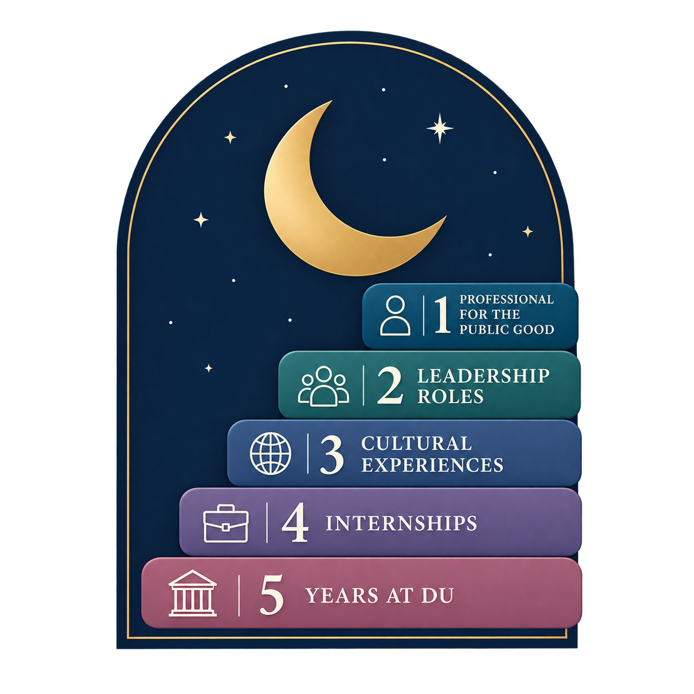

"College was never a given, but a dream."
As a first-generation college student, I was truly ecstatic for the opportunity to attend college, and even more so to attend the University of Denver. As I conclude my journey with both a Bachelor of Science in Accounting and a Master of Science in Accounting, Technology, and Analytics, I have come to realize just how much I have truly accomplished. It is a journey I find best encapsulated by the following model.
Coming into college, I had no idea what I wanted to study, but DU gave me the space and freedom to explore. Over the course of five years at the University of Denver, I had the privilege to engage with a truly interdisciplinary curriculum that shaped both my technical skills and my ability to apply them to true business circumstances. My commitment to interdisciplinary education encouraged me to venture beyond traditional accounting coursework and explore disciplines that would expand my knowledge base. From mastering data analytics tools such as Python, SQL, and R, to exploring the humanities through Asian American Literature and the art of negotiation, my academic journey reflects a deliberate effort to grow into a well-rounded professional.
Mastered data analytics tools such as Python (INFO 3100), SQL (INFO 3140), and R (INFO 3200), then applied them directly through Sports Analytics (INFO 3320) and Accounting Data Analytics (ACTG 3034).
Ventured beyond accounting through the humanities, exploring Asian American Literature (ENGL 2722) and the art of Successful Negotiations (EVM 4440), a deliberate effort to grow into a well-rounded professional.
My first internship experience at a Denver-based company marked a pivotal moment in my professional development, one that challenged me to think on my feet and problem-solve in ways that no classroom fully prepares you for. Over the course of nearly a year, I analyzed survey responses from 150 distributors across the United States to analyze the performance of 8 brewers. Building 12 personalized and dynamic dashboards that displayed meaningful quantitative and qualitative data required me to constantly adapt my approach as new challenges emerged. I collaborated daily with the Vice President to ensure the dashboards were an effective tool for improving brewer-distributor relationships. This internship laid the foundation for how I approach problems today: with curiosity, flexibility, and a willingness to figure it out.
My second internship was with RubinBrown as a Consulting and Risk Services intern, building on the foundation of my first and pushing me to operate at an even higher level of professionalism, working with a greater variety of projects. One of my primary responsibilities was conducting payroll testing as part of an internal audit, a task that required a sharp eye for detail and a thorough understanding of complex payroll policies. I also compiled a transactions database to support the Bankruptcy and Forensic groups' evaluations and analysis. Perhaps the most valuable aspect of this experience was the opportunity to engage with cross-functional teams, including partners and managers, well beyond the scope of my immediate role, interactions that taught me consulting is as much about relationships and communication as it is about technical expertise.
Early in the year, I had the privilege of interning at KPMG, one of the world's leading professional services firms, where I got a chance to experience public accounting at the highest level. My primary responsibilities centered on performing substantive audit testing on financial statement accounts, verifying their completeness, accuracy, and proper presentation, work that required both meticulous attention to detail and a strong command of the accounting principles I had spent five years building in the classroom. I also tested the operating effectiveness of key internal controls, which deepened my understanding of how large organizations manage risk. Interning at KPMG was a defining experience, one that confirmed my passion for accounting and data analytics.
My final internship experience took me into the world of cybersecurity and IT audit at Plante Moran, where I worked alongside a team to perform SOC 1 and SOC 2 audits for software companies across roughly five different clients. This role challenged me to apply the IT audit coursework I had built in the classroom to real, high-stakes engagements, testing controls around the systems that companies rely on to keep their clients' data secure. One of the most memorable parts of this internship was getting to travel on-site to physically observe data centers, an experience that brought the abstract concept of "controls" to life in a very tangible way. Plante Moran was the perfect capstone to my internship journey, tying together everything I had learned about technical rigor, professionalism, and relationship-building into one final experience before starting my career.
Traveling across Japan, Korea, and Vietnam was one of the most transformative experiences of my college years, offering a perspective on the world that simply cannot be gained from a textbook. During my time in Tokyo's business district, I had the unique opportunity to observe Japan's corporate environment firsthand, a level of formality and structure that stood in striking contrast to the more casual nature of the American corporate world. Immersing myself in the rich cultures and historical sites of all three countries broadened my understanding of the world as a whole, and reminded me that becoming a well-rounded professional means developing the cultural awareness and global perspective to connect with people from all walks of life.
Growing up in a multilingual household, speaking both Vietnamese and Cantonese, gave me an early appreciation for the power of language, not just pronunciation, but the art of communication itself. I carried that love of language into my time at DU, where I made the decision to pursue a fourth language: Mandarin Chinese. Learning Chinese has been both one of the most challenging and most rewarding endeavors of my college career. Beyond the linguistics, studying Chinese opened a door to a culture that is deeply personal to me. Four years of studying Mandarin allowed me to reclaim a connection to my heritage that, growing up as a first-generation Asian American in suburban America, I had often set aside. In many ways, earning a Chinese minor was not just an academic achievement, it was a personal one.
Throughout my internships and time at DU, I have had the privilege of growing a professional network that includes some truly incredible AAPI leaders, individuals who have shown me firsthand what it looks like to break down barriers in this industry. At Plante Moran, I connected with Yiping Sun, a Principal, and Jennifer Zanone, a Partner, both in Cybersecurity, who generously introduced me to the field and offered guidance as I navigated my own internship experience. Through KPMG, I met Nam Luu, a Managing Director in Private Equity, whose career path opened my eyes to the breadth of opportunities within consulting far beyond audit. I also connected with Vy Nguyen, a Senior Director at Alvarez & Marsal, who shared invaluable advice on carving out a niche in the industry. Seeing AAPI professionals thrive at the highest levels of firms like these has been deeply meaningful to me, not just professionally, but personally, as a reminder that representation and mentorship can open doors that once felt closed.
Leadership does not always come with a title, sometimes it comes with a whiteboard and a room full of students counting on you. As a Microsoft Senior Teaching Assistant, I coordinated and led a team of two junior TAs to educate 20 to 30 students in Microsoft Office applications, including Advanced Excel topics. Designing dynamic and practical assignments that kept students engaged while ensuring genuine comprehension was a challenge I embraced wholeheartedly, and my classes achieved an overall 93% passing rate. Building on that experience, I went on to serve as a Teaching Assistant for Core Accounting, where I supported 30 to 50 students as a mentor, teaching lectures and labs. These two positions taught me that strong leaders are first strong communicators, and that patience and compassion go a very long way.
I had the honor of serving as Treasurer for DU's Beta Alpha Psi chapter, a position that brought my accounting education to life in a very real and meaningful way. Managing detailed financial records of revenues and expenses for a 120-member chapter was no small task. My responsibilities included developing and monitoring the annual budget, which funded large-scale social and professional development events with up to 200 attendees. I also made it a priority to increase funding allocated to community service initiatives, working closely with the chapter's VP of Community Service to put together a fundraiser that provided 50 Thanksgiving meals to families in need and supplied 100 backpacks to local students in underserved communities. In many ways, serving as Treasurer was where everything came together: the technical skills I had built in the classroom, the leadership instincts I had developed as a TA, and a genuine desire to leave something better than I found it.
All in all, the adventures and experiences from my five years at DU have led me toward a career in the consulting industry, with a focus on internal and IT audit. More than a career path, my time at DU has been a story of discovery, of a first-generation Asian American girl who came in with no roadmap and leaves with a sense of purpose and direction she could have never anticipated.
"To any young first-generation Asian American woman who finds herself standing at the beginning of an uncertain path, I hope my story reminds you that the absence of a paved road is not a barrier, it is an invitation. I am the first in my family to accomplish something that the generations before me were never given the opportunity to pursue, and for that, for every professor, mentor, and supporter who believed in me along the way, I will be forever grateful."
A mapping of how each experience from my journey fulfills the requirements of the Distinction program.